Phase E Scientific Observatory — What You Are Seeing
This page provides a static visual reference of the TRIZEL ecosystem structure
as a Phase E read-only observatory display.
It shows accounts, organizations, repositories, and the three-layer authority pipeline.
Phase E Characteristics: All diagrams are frozen documentation—no integration,
no execution, no analysis, no live data. This is a snapshot-based reference system only.
⚠️ No dashboards, no analytics, no interactivity — Phase F features are forbidden
Diagram 1: TRIZEL Ecosystem Map
Complete overview of TRIZEL accounts, organizations, and repositories.
Shows the reference relationships (not integrations) between components and the presentation layer.

Legend
- Account: abdelkader-omran — Personal account containing monitoring and data repositories
- Organization: trizel-ai — Core organization with governance, research, and internal tools
- Account: trizel-admin — Administrative control account for presentation gateway
- Organization: trizel-ai-site — Presentation organization hosting this static website
- trizel-lab — Marked as Private/Internal research documentation
- Arrows — Reference flow for presentation only (no integration or execution)
Phase E Compliance — External References Only
All repositories shown in these diagrams are external references.
This website (Layer-2 / Phase E) operates as a read-only scientific observatory with:
- No integration with any external system
- No execution of code or algorithms
- No analysis or data processing
- No live data — all content is frozen snapshots
- No pipelines — no automation or CI/CD (validation only)
- No Phase F features — no dashboards, analytics, or interactivity
All content is static HTML/CSS/SVG only. Minimal JavaScript (88 lines) for language switching only.
Authority derives exclusively from trizel-core (Layer-0 Governance).